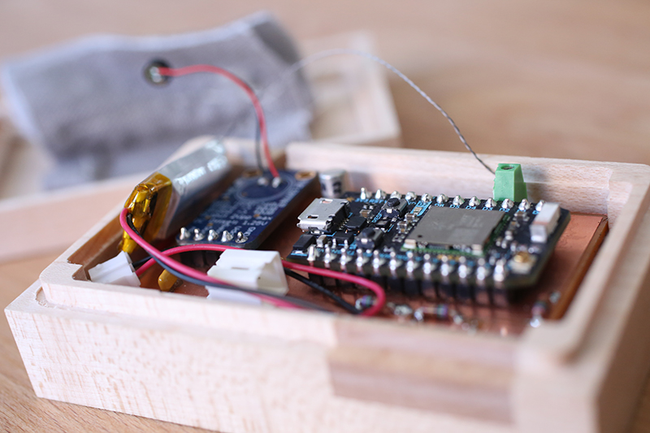
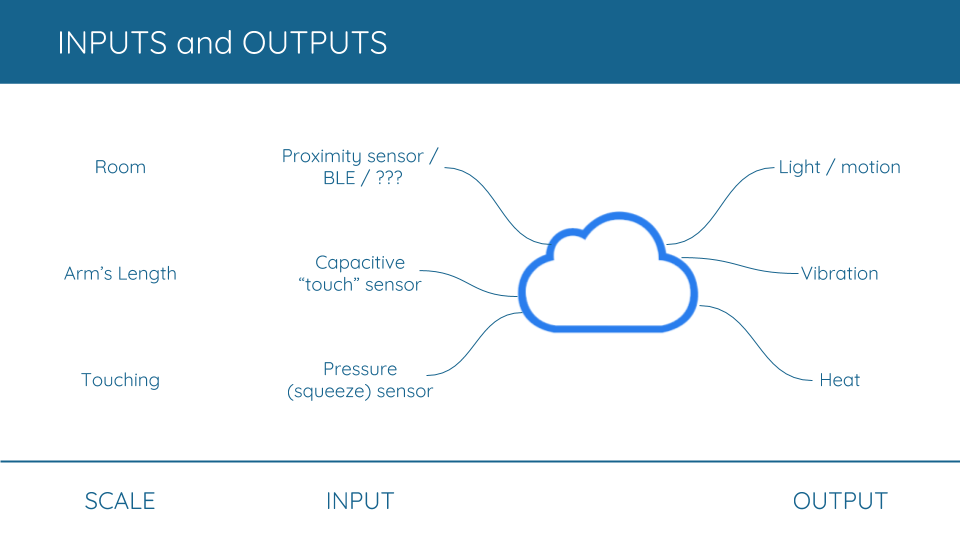
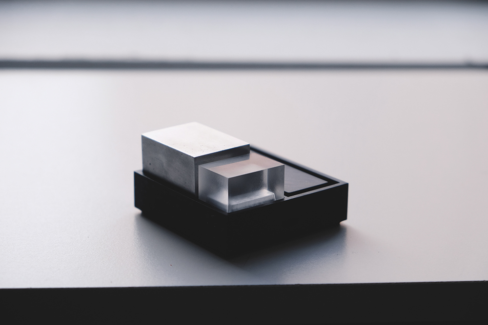

KOKO is a project I collaborated on with Darrien Tu, a design intern at Tomorrow Lab, intended for people in long-distance relationships. The idea behind it is that digital communication in its many forms makes such relationships easier than they once were, but there is still something missing when two people can only communicate through glass and pixels. Our goal was essentially to shroud the digital abstraction in a layer of aesthetic materials and broad sensory experiences to bring their correspondence back into the physical world.

We determined that our product would consist of two cloud-connected devices: a remote device that would live with someone far from home and detect basic types of their interaction, and a home device that would stay with their family or significant other and have a set of corresponding tactile outputs. To decide on the exact set of inputs and outputs, our design principle was the idea of scale. Is the remote person in the same room as the device, within arm’s reach, touching it, or actually holding it in their hand? The outputs needed to match up to the inputs in terms of scale - that is, if the person were in the same room as the remote device, anyone in the same room as the home device should be made aware.

We chose the Particle platform for cloud connectivity for its out-of-the-box usability, small footprint, and ease of prototyping. Incorporating conductive fabric gave the product a really nice texture and an easy way to do capacitive touch sensing. The home device uses a series of cubes, each made of something very different from the glass, polymers and silicon that are hallmarks of digital devices, that output different physical signals to denote the remote person's level of interaction. Light means that they are in the same room as their device. Vibration occurs when they touch it. And heat when they pick it up and hold it in their hand. Early looks-like prototypes explored using a rounded shape and large radii to make the remote device comfortable to hold. The final design was made with high-quality maple and a rectangular form that corresponded more closely with the home device.

This project gave me the chance to learn a lot more about PCB design and mill out my first PCB on the OtherMill. We also used the OtherMill for most of our later stage prototyping with final materials.